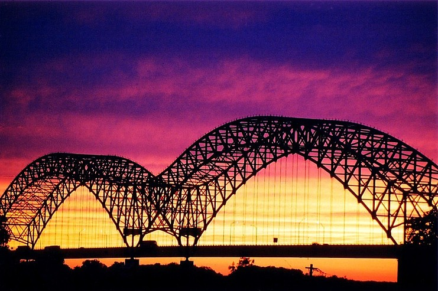
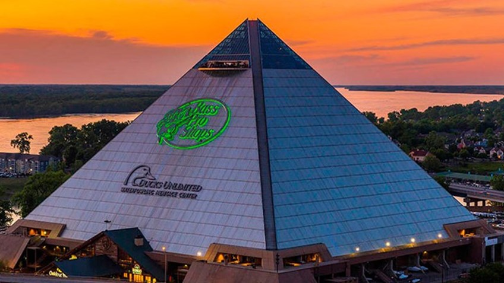
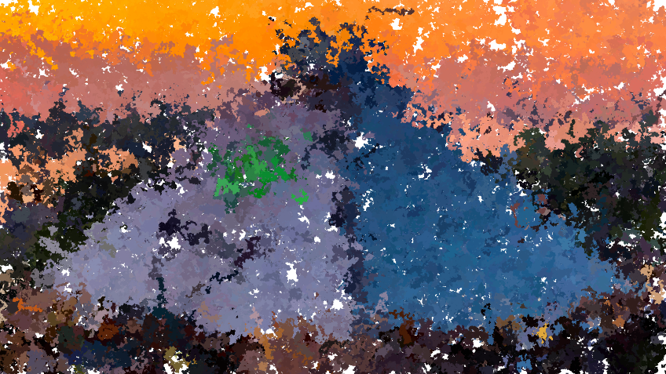
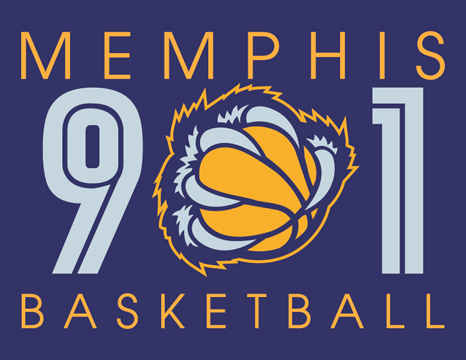
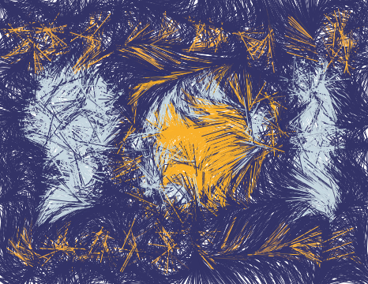
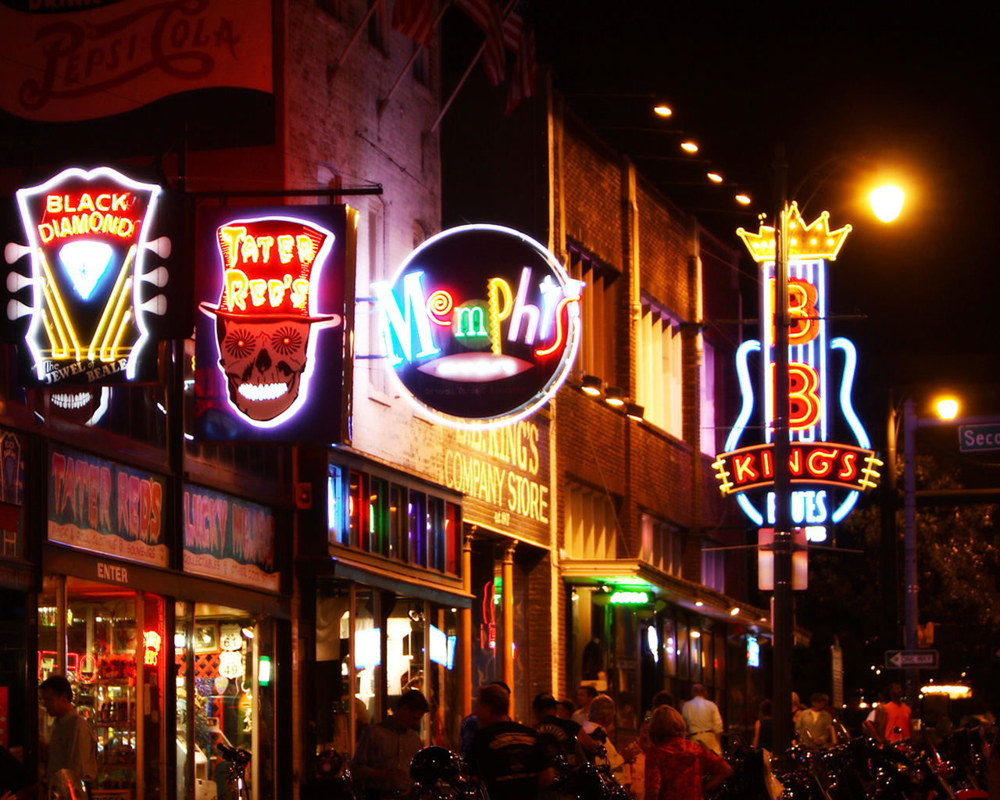
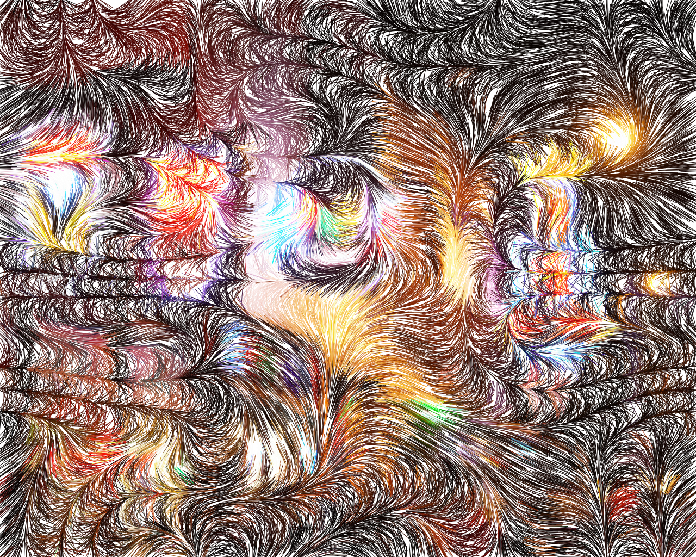
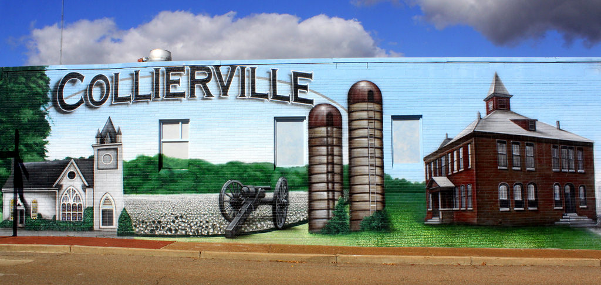
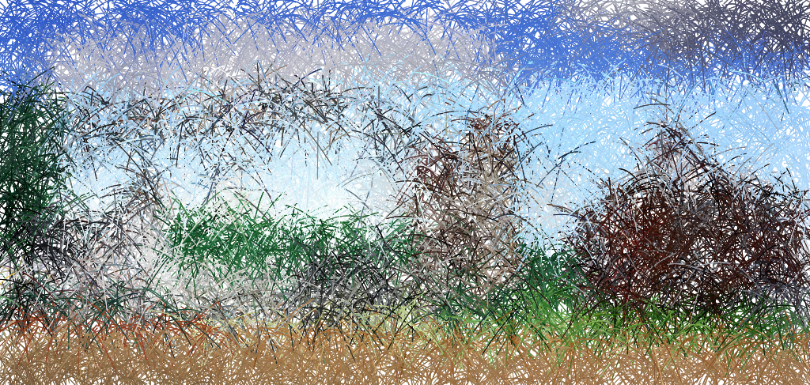

Tennessee's Impressionism

This is a picture of the i-40 bridge across the Mississippi River. This is always important to me because when I come home from any road trip or even from school in Nebraska, I cross this bridge knowing that I'm finally home.


The Pyramid in downtown Memphis is always a highlight. The Pyramid was modelled after the pyramids in Egypt. Before this became a Bass Pro Shop and hotel in the summer of 2015, this was an auditorium where I watched several shows when I was a little.


"Choose 901" means a lot in the city. It shows the pride of those who were born and raised here. Memphis' area code is not only 901, we also have an NBA team: Memphis Grizzlies where season tickets are always a must and the phrase "Grit Grind" is life.


Beale Street is always the place to go for tourism. There's so much rich history here, as well as, great barbeque and sweet tea.


Collierville, TN is a small suburb east of Memphis. I was a part of this town for most of my life and has impacted my life. I grew up here, went to school here, and went to church here. Collierville's Annual Christmas Parade is what I always look forward to every year, as well as, Fair on the Square.